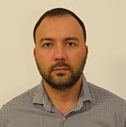

Daniyar Bikchentaev
QA Engineer

Contacts:
Experience
Junior Manual QA 04.2021-10.2021, Kazan
- Bank Project
- Work with: Apache AMQ, Apache Karaf, IBM WMQ, SQL, Testlink, Jira, Confluence, SVN
- Requirements analysis, writing test plans, checklists, test cases and bug reports
- Functional testing, Smoke testing, Regress Testing, Requirements testing
-
Midlle Manual/Auto QA 11.2021-nowadays, Moscow
- Bank Project
- Work with: IBM WMQ, SQL, Jira, Confluence, SOAPUi, REST API, RFHUtils, AltovaXML Spy
- Requirements analysis, writing test plans, checklists, test cases and bug reports
- Functional testing, Smoke testing, Regress Testing, Requirements testing
Previous job
Network Engineer. 2019-2021. CIT RT www.citrt.ru
- Worked with: Cisco, Juniper, Mikrotik
- HTTP, TCP/IP, MPLS, BGP
- VLAN, DHCP, NAT, ACL
Education
- Kazan Fededal University, 2005-2011
- Faculty of Computational Mathematics and Cybernetics
- Specialty: mathematician, system programmer
Courses
Books
- "Тестирование DOT COM", Роман Савин
- Reading: "Тестирование программного обеспечения. Базовый курс", Святослав Куликов
- Next book: "A Practitioner's Guide to Software Test Design" by Lee Copeland